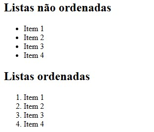

PORTIFÓLIO
Todos os trabalhos apresentados nessa seção, foram desenvolvidos pelas atividades
práticas e aulas da matéria 'FERRAMENTAS DE DESENVOLVIMENTO WEB'
Site - TecnoLogica
Desenvolvido em aula prática pela UNINTER
Trabalho prático de um site genérico.
Barras de navegação
Desenvolvido em aula prática pela UNINTER
Estudo de barras de navegação.
Elementos Estruturais
Desenvolvido em aula prática pela UNINTER
Estudo sobre elementos estruturais

Estilos
Desenvolvido em aula prática pela UNINTER
Estudo sobre estilos. Contemplando 'Seletores', 'Largura' e 'Posição'
Clear
Desenvolvido em aula prática pela UNINTER
Estudo desenvolvido pela inteligencia artificial Gemini para o entendimento do 'clear' e 'float'

Flex
Desenvolvido em aula prática pela UNINTER
Estudo sobre 'flexform'.
Link
Desenvolvido em aula prática pela UNINTER
Estudo sobre as possibilidades de 'links'.
Listas
Desenvolvido em aula prática pela UNINTER
Estudo sobre 'listas'.
MediaQuery
Desenvolvido em aula prática pela UNINTER
Estudo sobre 'MediaQuery'.
Menus
Desenvolvido em aula prática pela UNINTER
Estudo sobre 'menu', submenus' e 'botões'.
Tabelas
Desenvolvido em aula prática pela UNINTER
Estudo sobre tabelas.
Variáveis
Desenvolvido em aula prática pela UNINTER
Estudo sobre 'variáveis'